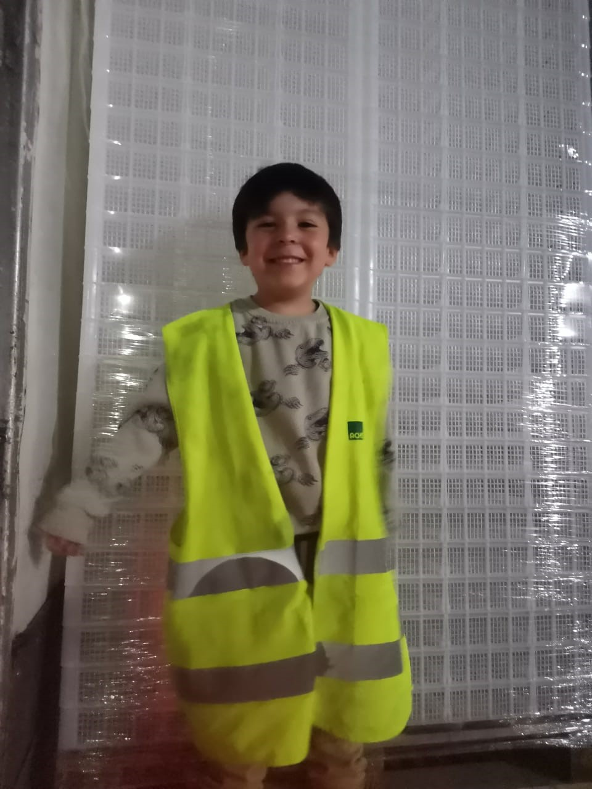
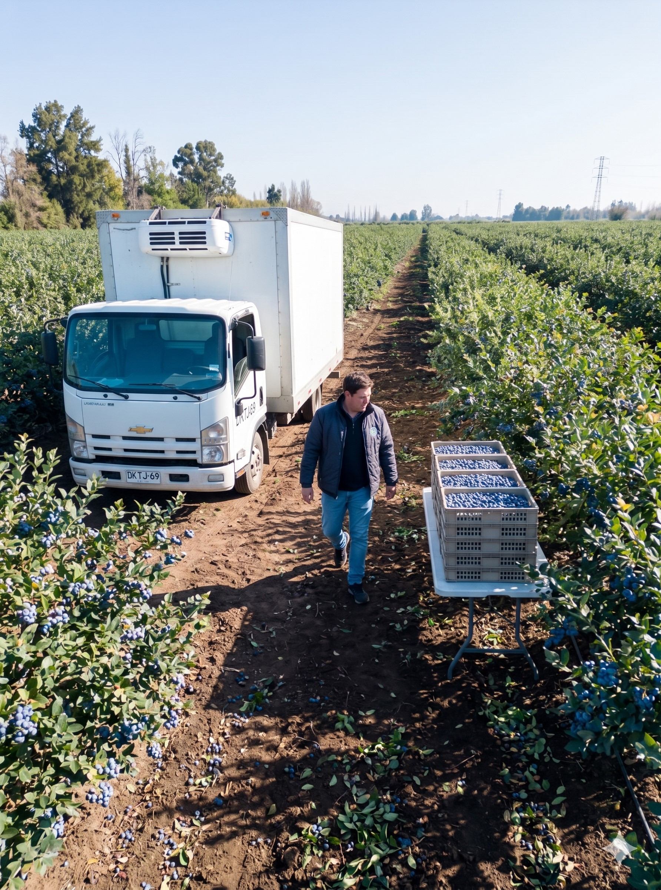
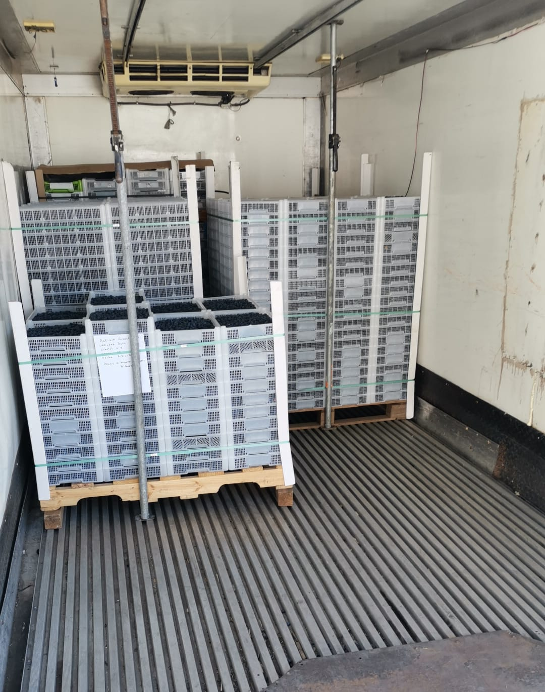
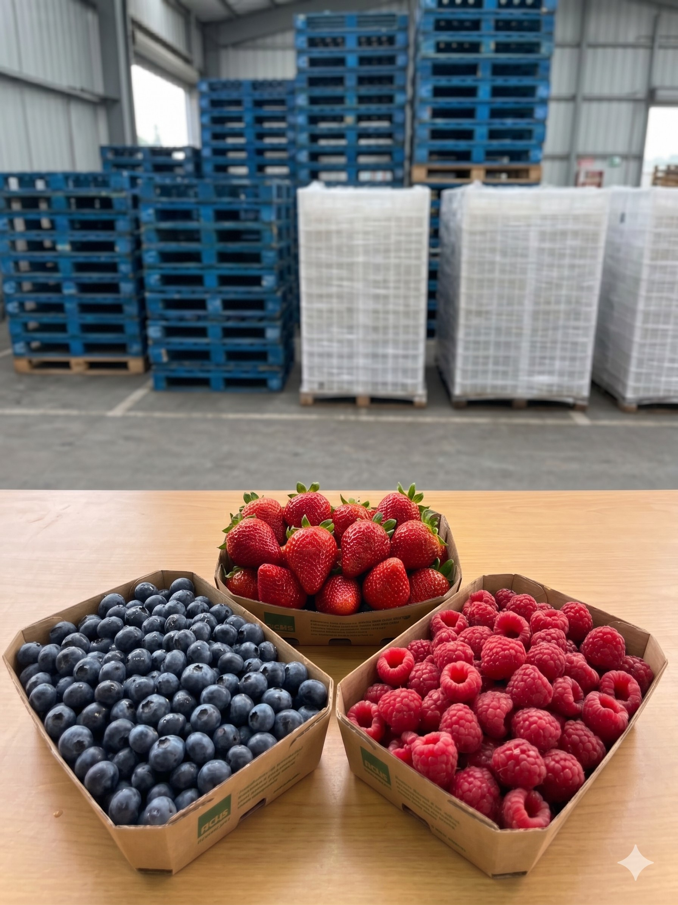
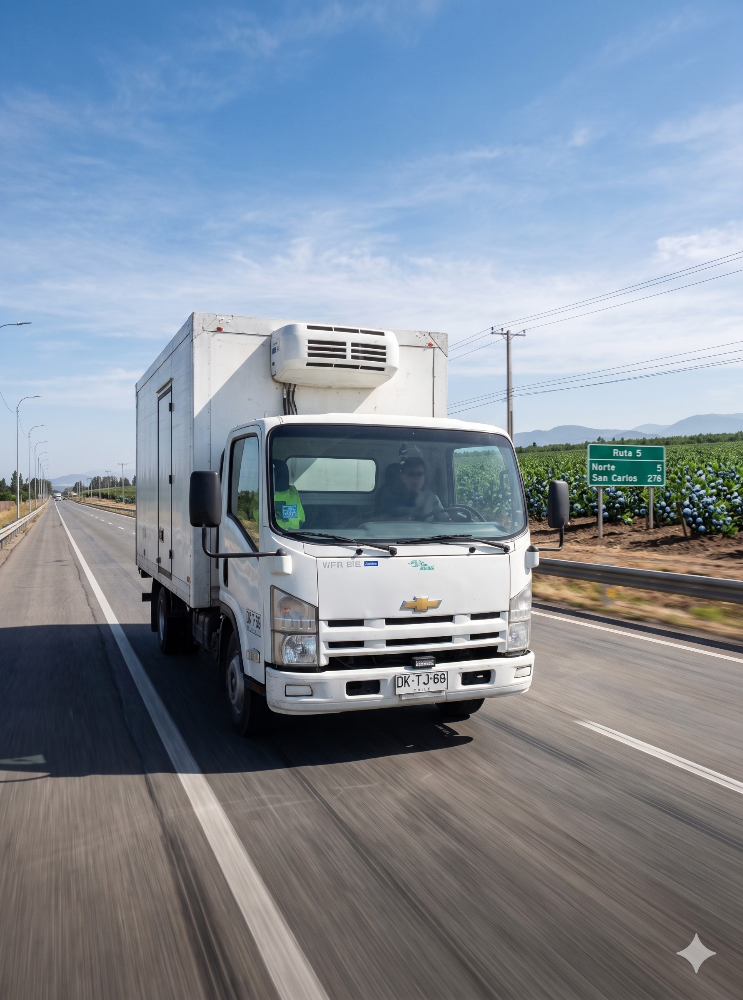
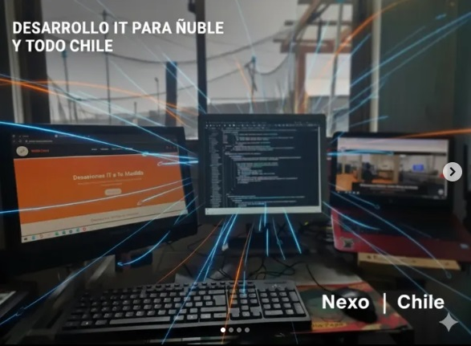
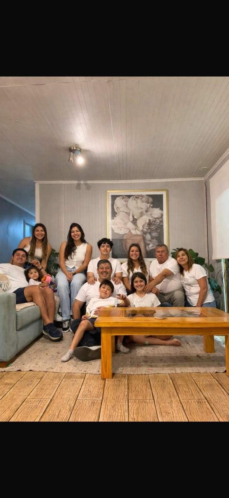

👨👦 Voy a presentarles a mi familia y el trabajo de mi papá Rodrigo
📚 Rodrigo estudió Ingeniería Agrícola, trabajó en campos y exportadoras, ¡y hoy trabaja con camiones que transportan fruta del campo a muchos lugares! 🚚✨




🖥️ Además de trabajar con camiones y fruta, Rodrigo también usa computadores y programas para ayudar a algunas empresas a organizar mejor su trabajo.
✅ Solo eso: ¡así los camiones viajan mejor y la fruta llega más rápido! 🍎🚛

🚛 ¿Quién ha visto camiones grandes? 🚛
🍓 ¿Qué frutas conocen? 🫐
📦 ¿Qué creen que llevan estos camiones gigantes? 🚛
🔥 Toca las frutas que deben ir en el camión refrigerado (las que se echan a perder si hace calor).

🌟 Los camiones, la fruta y el campo son muy importantes. ¡Mi papá Rodrigo ayuda a que la fruta llegue rica a todos lados! 🌟